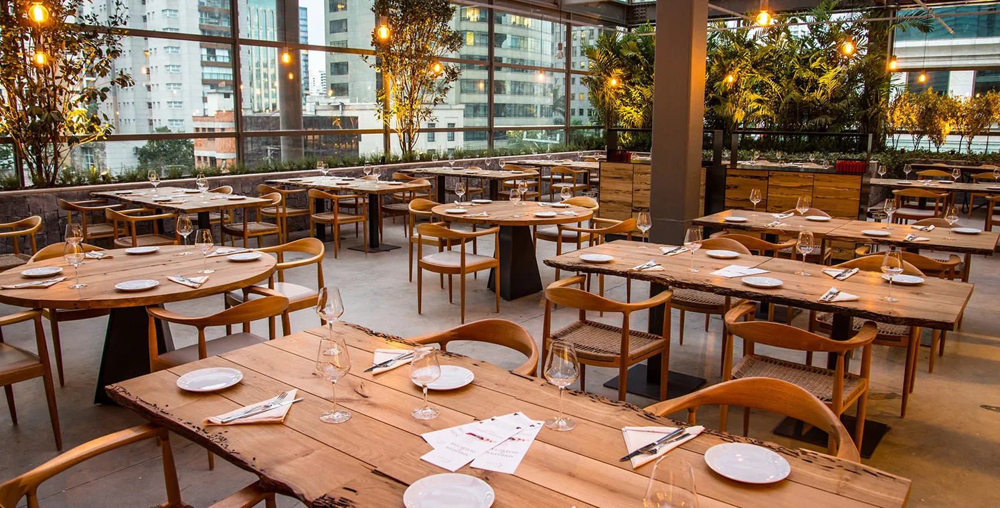

Sobre Nós
Bem-vindo ao nosso restaurante italiano Tradizione, onde a tradição e a autenticidade se encontram em cada prato. Aqui, cada refeição é uma celebração dos sabores genuínos da Itália, com receitas que foram passadas de geração em geração. Nossos chefs são mestres na arte de preparar massas frescas, risotos cremosos e carnes suculentas, utilizando ingredientes selecionados com o maior cuidado para garantir uma experiência gastronômica inigualável.
No coração do nosso cardápio estão os pratos principais, como a clássica Lasanha à bolonhesa e o sofisticado Frango à caçadora, que prometem transportar você para as colinas ensolaradas da Toscana. Para os amantes de sobremesas, oferecemos delícias como o tradicional Tiramisu e o irresistível Cannoli siciliano, cada um feito com o toque artesanal que é nossa marca registrada. Complementando sua refeição, temos uma seleção especial de vinhos italianos, além de bebidas refrescantes para todos os gostos.
Seja para um jantar romântico, uma celebração em família, ou simplesmente para desfrutar de uma refeição deliciosa, nosso restaurante é o destino perfeito. O ambiente acolhedor, combinado com um atendimento caloroso e atencioso, faz com que cada visita seja uma experiência única e memorável. Venha nos visitar e permita que nossos sabores autênticos o levem a uma viagem gastronômica inesquecível pela Itália.